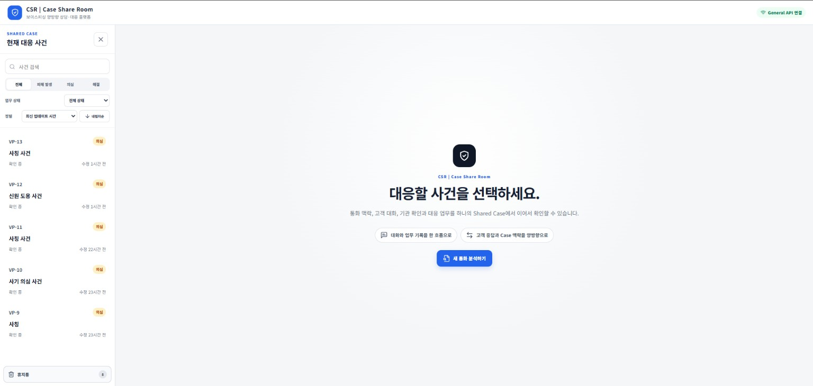
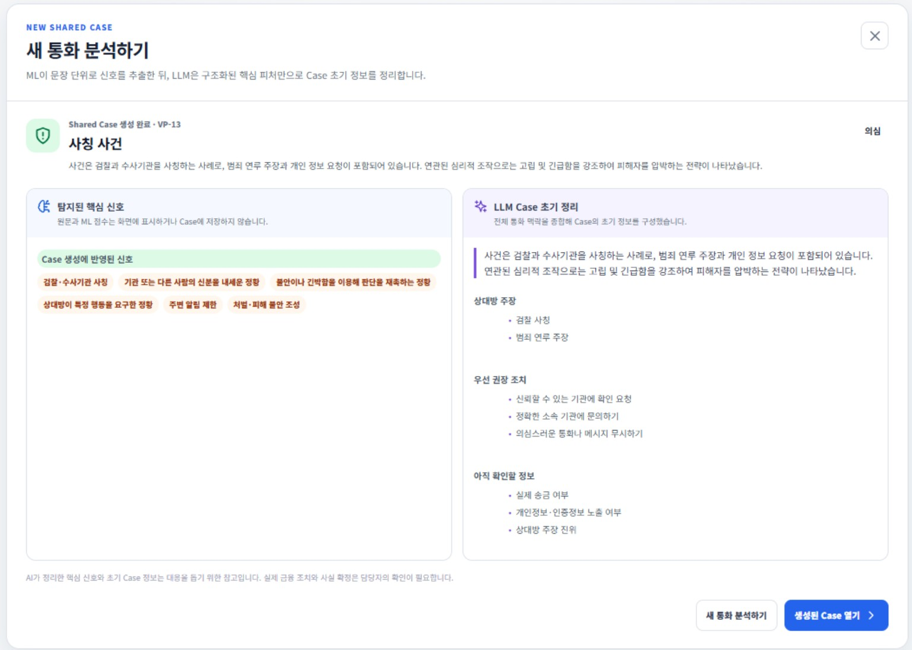
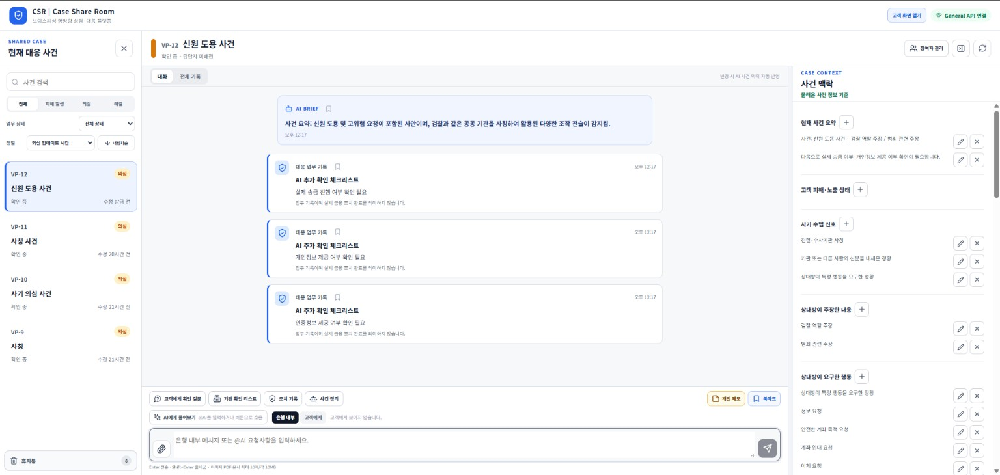
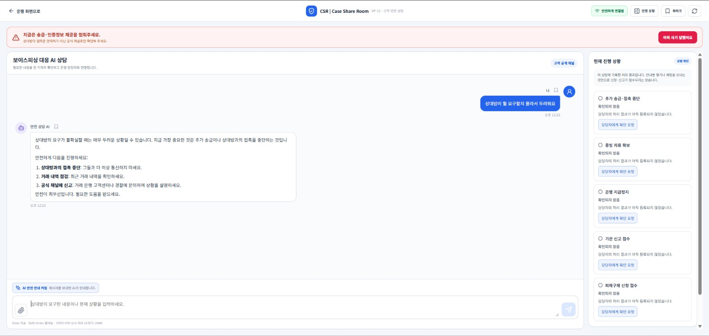

현재 AI 기능
실제 endpoint와 구현 파일에서 확인된 기능
구현 경계 Case Support Snapshot은 규칙 기반 projection입니다. 사건 근거 검색은 General API에서 수행하고 AI API에는 선별된 retrieved_context만 전달합니다.
탐지 이후의 확인과 대응
고객과 은행이 같은 사건을 기준으로 상황을 확인하고, AI는 필요한 질문과 업무 정리를 지원합니다. 최종 판단과 실제 금융조치는 사람이 수행합니다.
실제 코드 기반 기술 정보를 불러오는 중입니다.
A. 서비스 구조
기술명은 작게, 각 구성요소가 실제로 맡는 일을 먼저 보여줍니다. 카드를 선택하면 코드 근거와 상세 정보를 확인할 수 있습니다.
기존 화면을 복제하지 않고, 현재 MVP에서 체험할 흐름만 보여줍니다.




B. 기술 구현
무엇을 사용했는지보다 어디에서 어떤 역할을 수행하는지에 집중합니다. CURRENT 표시는 실제 코드 근거가 있을 때만 사용합니다.
실제 endpoint와 구현 파일에서 확인된 기능
구현 경계 Case Support Snapshot은 규칙 기반 projection입니다. 사건 근거 검색은 General API에서 수행하고 AI API에는 선별된 retrieved_context만 전달합니다.
실험용 artifact를 사용한 현재 추론 흐름
C. MVP vs 실제 서비스
왼쪽은 지금 직접 체험할 수 있는 범위이고, 오른쪽은 금융기관 환경에 연결하는 TARGET SERVICE 설계입니다.
통화 Text 분석부터 고객과 은행의 양방향 확인, 사건 기록과 Report까지 같은 Shared Case에서 이어집니다.